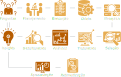

Introdução a Análises de dados de Processo
utilizando um Sistema de Gerenciamento de Informações de Processos (PIMS)
caso prático com o EPM ( Elipse Plant Manager - PIMS da Elipse Software)

This work is licensed under a Creative Commons Attribution 4.0 International License.
Alinhando Expectativas
- Introdução a Análises de dados
- Dados de Processo
- Sistema de Gerenciamento de Informações de Processos - PIMS
Agenda
- Institucional
- Motivação
- Sistemas de Ctrl.&Aut. - perspectiva do fluxo de dados
- Breve introdução a Análise de Dados
- Ferramentas de análise do EPM
- O que é a linguagem Python - noções de programação
- Ambiente integrado de análise
- Ambiente integrado de soluções
- *** PROVA FINAL! ☺ ***
Motivações
Sumarizando em duas palavras:
- diversão ("extra oficial") !
- lucro ("oficial") !

Mãos na massa (diversão)!
Análise Exploratória/Preliminar/Inicial
Verificar o maior número possível de informações que podem ser extraídas de uma análise exploratória inicial das Temperaturas das salas da Elipse-RS no mês de junho de 2017.
- ADM_Temperature
- EPMDev_Temperature
- PowerDev_Temperature
- E3Dev_Temperature

Motivação ("oficial")

O objetivo primordial de qualquer “NEGÓCIO” é o “LUCRO”!!!
Ou seja, espera-se obter um retorno positivo do investimento realizado em um “Negócio”
Motivação
Quem não quer lucro?!
Mas como saber se o negócio está dando lucro?
Sabendo que o negócio está “dando lucro”, como saber se este é o maior LUCRO possível?
Sabendo qual o maior “LUCRO possível”, como atingi-lo?
Ciclo PDCA - Melhoria Contínua
Para implementar o PDCA é fundamental ter DADOS para:
- planejar e executar as ações
- verificar os resultados (a partir de referências)
- implementar os ajustes
- monitorar indicadores
Ciclo PDCA - "malha de controle"

"Pirâmide Automação"
perspectiva dos Sistemas

Sistemas - Soluções Elipse Software
Plataforma de Gerenciamento de Dados de Processo
Arquitetura típica de um PIMS

Visualizações & Análises
- Integração com o MS Excel® EPM Add-in for Microsoft Excel
- Análises de tendências EPM Chart Analysis
- Análises avançadas – linguagem Python EPM Dataset Analysis
- Portal de Dashboards Ad hoc EPM Portal
- Relatórios - pdf, html, etc. EPM Report Player for SSRS
- Automatização & Gerenciamento de Python scripts EPM Processor
- Integração com sistemas corporativos (OPC UA, Python API, RESTful API...)
- Análises mais complexas e uso em outros IDE's Python EPM SDK Python e epmwebapi
Definindo terminologias e contextualizando o que será visto em termos de análises...
Análises - Visão Geral
"Tipos" de Análises - Séries Temporais
Info's do Processo
- Estados operacionais ok/durações
- Tendências previsões
- Padrões Oscilatórios
- Relação entre varáveis MV/PV/Disturbances
- Dinâmicas
- Open Loop dead time, rise time, SS ...
- Closed Loop settling time, overshoot, damping ratio ...
Info's Estatísticas
- Frequências
- Medidas de posição media, mediana, moda, quartis ...
- Medidas de dispersão amplitude, variância, σ, distância entre quartis ...
Séries temporais
Tipos de informações
- Valor Value
- Estampa de tempo Timestamp
- Qualidade Quality
Natureza da informação
- Discreta digital
- Contínua analógica

Análise Exploratória (Séries temporais)
Identificação de tendências & padrões

Análise Exploratória (Séries temporais)
Identificação da dinâmica do processo
Análise Exploratória (Séries temporais)
Seleção de período & tratamento prévio dos dados
Outras questões técnicas que precisam ser levadas em consideração antes de prosseguir...
*** Coleta dos Dados - Processamento/Armazenamento ***
Informações típicas de uma variável de processo 

- Nome identificador único
- Descrição informações sobre a variável, seu contexto, etc. - usado em pesquisas
- Domínio natureza da variável, pode ser Contínua (analógica) ou Discreta (digital)
- Tipo da variável numérica (double, float, integer), boleana (boolean), texto (string), date-time (date-time)
- Unidade de medida unidade de engenharia
- Limites da variável min/max
- Processamentos adicionais
- Clamping None|Discard|ToRange
- Scaling regra de três
- FilterDead Band
- Data Compression BCBS, Swinging Doors ...
ATENÇÃO na Coleta de Dados
Em geral, os softwares PIMS recebem dados por exceção.
Este mecanismos tem impactos diretos sobre a redução do tráfego na rede & nas Consultas aos Dados, que é o que mais interessa para "fazer" engenharia!!!
ATENÇÃO na Compressão dos Dados
- Compressão sem descarte de dados
- Compressão com descarte de dados existe um compromisso em redução do espaço de armazenamento e
reconstituição aceitável do sinal original
ATENÇÃO na Compressão dos Dados
Dependendo das configurações utilizadas no Algoritmo de Compressão, as informações dinâmicas podem ser perdidas! EXEMPLO: desativar compressão para Step Tests na planta.
Em geral estas análises não costumam ser feitas com dados “muito antigos”.
Consultas à variáveis de processo
Tipicamente uma função do tipo Historical_Data = get_data(params)
- Nome da variável
- Data do início do período (inclusive)
- Data do final do período (exclusive)
- Timezone
- Tipo de Agregação (= processamento)
- Intervalo de Processamento
- Tratamento das extremidades
- ...
Consultas a Dados Históricos
- Padrão OPC UA -
- RAW
- Interpolative
- Average
- Time Average
- Total
- Minimum/Maximum
- Range
- Count
- Duration In State Zero/Non-Zero
- ...
Mãos na massa!
Detalhamento das análises
Fazer gráfico com as temperaturas médias diárias das salas Sul da Elipse Software - RS (10° e 11° andares EPMDev_Temperature / E3Dev_Temperature) do mês de junho de 2017.


Abre parênteses
(
linguagem Python
Alguém nunca ouviu falar?!
Alguém NÃO sabe nada?!
Se já sabes TUDO sobre Python...☺
Podes pular esta parte!
Clica na setinha à direita, ao invés de seguir para baixo!!!
- Linguagem de propósito geral de alto nível, lançada em 1991 por Guido van Rossum
- Interpretada, multiparadigma, de tipagem dinâmica e forte ...
- Comunidade forte e ativa, inclusive Comunidade Científica (grande crescimento/adesão nos últimos anos!!!)
KIT Básico para Análises (módulos)
Ambientes Python para Análises
IDE's for Data Science
Criando módulos
Declaração de funções
def nomeFuncao(arg1, arg2 , arg3 = 'None'):
""" Docstring - help da função
No Python 3 é possível usar caracteres especiais para nomes de
variáveis, funções, etc..; porém eu não recomendo! :)
"""
# código identado com 4 espaços
#
# Se tiver algum retorno, usar return
pass
Dicas
- comentar linha: #
- iniciar arquivo com (para o Python 2.7): # -*- coding: utf-8 -*-
- carregar módulos usando os namespaces
- para retornar valores usar: return
Mãos na massa!
Criar um módulo com uma função apenas
Fazer função que gera um gráfico de uma parábola e salvar arquivo no diretório: C:\MyLibs
Equação:
$$ \begin{align*} y = a^2 x + b x + c \\ onde: a = 1,\; b = 5, \; c = 6 \end{align*} $$
Dica: usar o Spyder
Importando módulos proprietários
Para carregar um módulo proprietário, é necessário que o mesmo esteja disponível no PATH do Python - que pode ser acessado através no módulo builtin do Python: sys.
>> import sys, numpy as np
>> print(sys.path)
>> sys.path.append(r'C:\MyLibs')
>> import my_module as mm
>> x = np.arange(-1, 7)
>> y = mm.parabola(x, a=1, b=-5, c=6, plotResult=True)
Dica de curso introdutório sobre Python
Learn Python with Socratica || Python Tutorial || Python Programming - Socratica
Fecha parênteses
(
linguagem Python
)
...voltando ao Dataset Analysis...
EPM Dataset Analysis
powered by Python
Ao expandir o Scripting pela primeira vez, é disparado um interpretador Python e executado o arquivo de inicialização: ConsoleInitialization.py .
- Console Python integrado
- Acesso aos dados das variáveis do gráfico de tendência;
- Plot de dados (Séries Temporais) na área do gráfico de tendência;
- Plugins na ribbon
- Acesso aos dados das variáveis do gráfico de tendência;
- Acesso às informações das variáveis do gráfico (Description, Eng. Unit, Domain, etc.)
- Janelas de aviso ao usuário: Information, Alert, Error;
- Janela de input do usuário

Mãos na massa!
Filtro de Ruído de Medida
Existem inúmeras formas de aplicar um filtro para minimizar e/ou eliminar os ruídos decorrente das medidas das variáveis de processo.
Este exercício consiste em desenvolver um Filtro de Média Móvel e a plicar na medida do nível de um tanque: LIC101 - perído: 03/03/2014 23:00:00 a 04/03/2014 01:00:00
Equação (Simple Moving Average):
$$ SMA = \dfrac{p_m + p_{m-1} + ... + p_{m-(n-1)}}{n} $$

Mãos na massa!
Agilizando ainda mais o processo de análises
Para os casos onde algumas funções são demandadas com frequência, vale a pena um "esforcinho" a mais e fazer um PLUGIN-Python, que aparece na ribbon do EPM Dataset Analysis.
Vamos fazer na prática um plugin e ver como é fácil?! ☺
Olha só a "cara" de uma função no plugin:
import Plugins as ep
@ep.DatasetFunctionPlugin (‘Nome no menu', 1, 'y')
def myFunc():
""" Descrição que aparecerá automaticamente no tooltip.
Atenção para caracteres especiais e acentos!
"""
#
# Aqui vem o código
#
y = None
return y
EPM Python API's
Criação de Scripts Python para análises e/ou execução sob demanda ou automática (por agendamento)
Exemplo de aplicações
- ler/processar/escrever dados do EPM e/ou outros sistema – consolidação de dados, otimizações em tempo real, etc.
- geração de relatórios (html, pdf, etc.)
- notificações via e-mail
- aplicações avançadas para processamentos e análises – CEP, Identificação de Modelos de Processos, Comissionamento de PID’s e de sistemas de Controle Avançado, Auditoria de malhas, etc.
EPM Web API
API em linguagem Python (3.6 ou superior) com suporte a inúmeras funcionalidades relacionadas ao sitema de informação.

Mais informações e exemplos em: GitHub da Elipse Software - EPM Web API (Python)
Mãos na massa!
Aprendendo a usar a EPM Web API na prática! ☺
Mãos na massa!
Bonus - Process Data Analysis
Algumas dicas extras sobre análise de dados de processo - na prática!!!
EPM Processor
O EPM Processor é um módulo do EPM reponsável pela execução automática ou sob demanda de códigos em linguagem Python.

Mais informações e exemplos em: GitHub da Elipse Software - EPM Processor
FAQs
- É possível utiliziar este sistema em modo de demonstração (DEMO)? Quais seriam as restrições?
- ...
Sim, é possível instalar todo o sistema (EPM Server, EPM Processor, EPM Portal, etc.) e utilizar em modo DEMO, a única restrição é quanto ao número de variáveis, que pode ser no máximo 20.
AGRADECIMENTOS
- Universo Open Source - Linux, Python, Anaconda, VIM, RevealJS, OBS, Kdenlive, Gimp, Inkscape, etc.
- Python: numpy, scipy, matplotlib, pandas, etc.
- GitHub, Bitbucket,..., Youtube, etc.
- GitHub, Bitbucket,..., Youtube, etc.
- ... a todos que, de alguma forma, contribuiram/contribuem para um "mundo open" ...
- ... a todos que contribuiram/contribuem para que este curso seja útil: alexandre, gabriel, leandro, jorge, renato, humberto, renan, dines, gilberto, luciano, pudi, sthefany, kotres, daniel, carol, helcker, filipe, lizandra, thais, scherer, aleksander, abreu, fabricio, diogo, julio, elves, wellington, johen, erich, cintia, guilherme, jose, andressa, jonathan, eduardo, beal, vinicius, ...
- Icons from The Noun Project - creators: priyanka, Kraya, Evangeline, Alice, vighnesh anvekar, ProSymbols.
- Royalty Free Music from Bensound
Sugestões de links
Canal da Elipse Software no Youtube
Canal do Maurício S. Posser (MSP) no Youtube - este que vos fala ☺
Exemplos do MSP no Anaconda Cloud
Repositório de exemplos do MSP
Canal do Corey Schafer no Youtube - TUDO sobre Python
Playlist: Python Programming Tutorials (Computer Science) - do canal Socratica
Por favor, se for constatado o uso indevido de qualquer conteúdo desta apresentação, crie uma "issue" no GitHub para que possamos resolver.
Obrigado! ☺